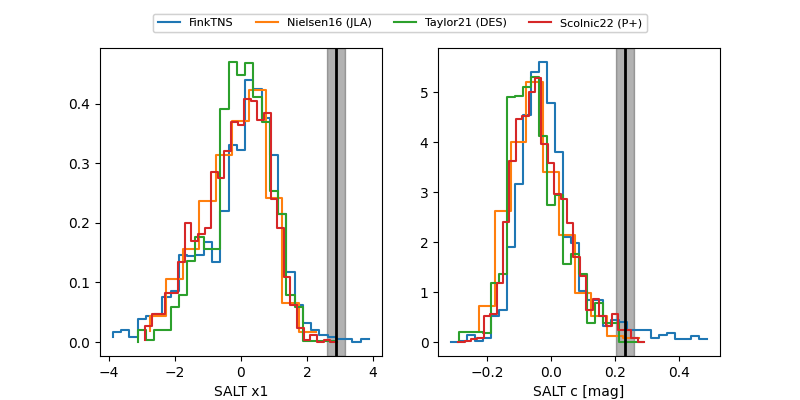

FINK: ZTF25abpxqho
Lasair: ZTF25abpxqho
ALeRCE: ZTF25abpxqho
TNS: 2025xgf
YSE: 2025xgf
ZTF25abpxqho (ztf,fink)
2025xgf (tns,yse)
ATLAS25lfl (atlas)
PS25hob (panstarrs)
equatorial (ra, dec) = (340.2492,-1.30642)
galactic (l, b) = (66.9536,-49.45431)

last atlasc=18.41, atlaso=17.73, ps1::g=17.86, ps1::i=18.39, ztfg=18.07, ztfr=18.33
1 atlasc, 9 atlaso, 3 ps1::g, 2 ps1::i, 6 ztfg, 7 ztfr detections